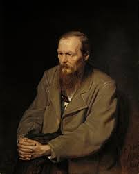

Фёдор Миха́йлович Достое́вский (30 октября [11 ноября] 1821, Москва — 28 января [9 февраля] 1881, Санкт-Петербург[2]) — русский писатель, мыслитель, философ и публицист[3]. Член-корреспондент Петербургской академии наук с 1877 года[4]. Классик мировой литературы, по данным ЮНЕСКО, один из самых читаемых писателей в мире. Собрание сочинений Достоевского состоит из 12 романов, четырёх новелл, 16 рассказов и множества других произведений.
Вторая страница. Третья страница.